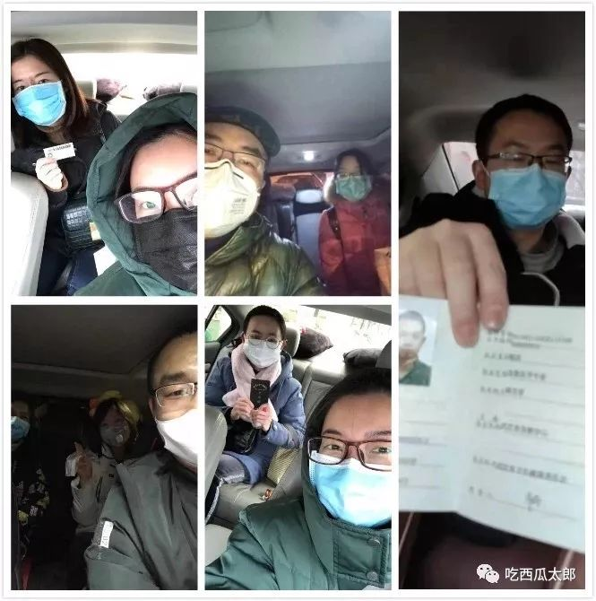
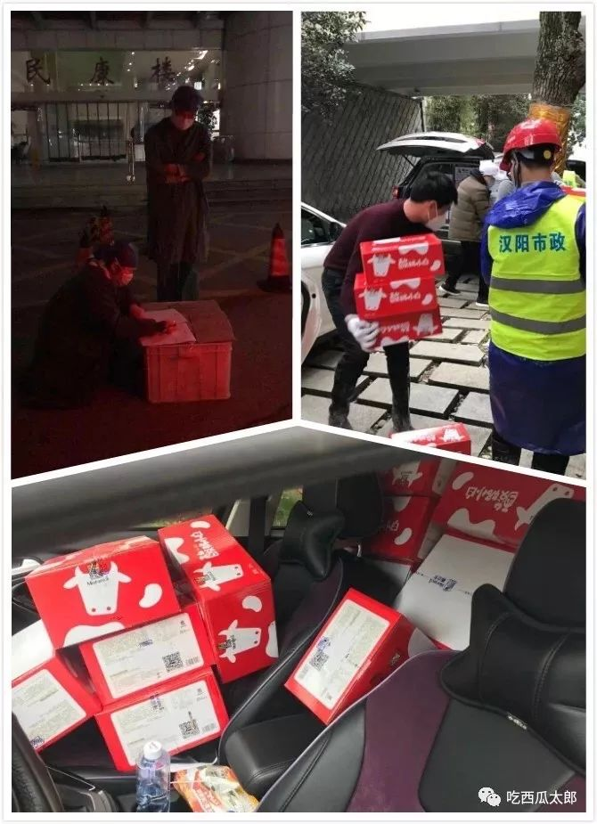
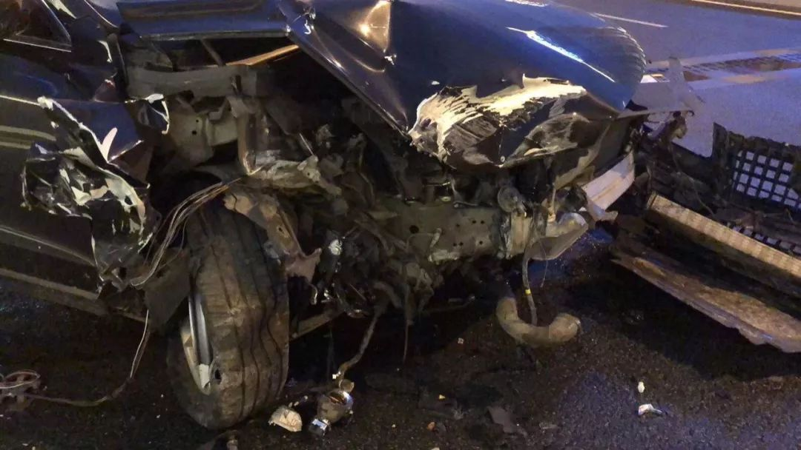

武汉网约车司机自述：“恨不得奉献出自己的每一分每一秒”
原文链接 备份链接 27.01.2020本文字数：1459，阅读时长大约2.5分钟 导读：“我生活在武汉，我热爱武汉。只有城市健康了，我们居民才会有舒适的小日子。” 作者 | 第一财经 刘佳 清晨6点的武汉，天还没亮，身穿黄色防护服、戴 …
记者/梁婷 实习记者/李一鸣 陈威敬
编辑/石爱华 刘汨

多位志愿司机与接送的医务人员自拍合影
自1月23日起，武汉市新型肺炎防控指挥部的几个通告切断了城区内外的公共交通。先后关闭了机场、火车站离汉通道。在停运全市公交、地铁、轮渡以及长途客运之后，又停运网约出租车，规定巡游出租车（即普通出租车）实行单双号限行。
公共交通停摆之后，6000辆出租车被紧急派往武汉城中区各个社区，服务居民和医务人员出行。深一度记者了解到，虽然每个社区配备3至5辆出租车，但依旧存在社区内医务人员上下班通勤难的情况。一位家住汉口、不会骑车的护士，需要五点起床，每天步行近3小时到医院上班。
深一度记者致电武汉市的多个社区，就车辆能否接送医务人员的问题，得到的回应各不相同。部分工作人员称社区出租车供老幼病者使用，医护人员另有专车。也有工作人员提到，出租车有富余时可以用，没有富余医务人员需自己想办法。
武汉公共交通关闭当天，多个民间志愿者车队群同时成立，一些由个人组织，一些由行业协会发起，志愿者义务接送医护人员，运送物资。
武汉出城通道封闭以来，志愿司机为生养自己的武汉尽一份力的同时，也要面对突来的意外和患病的风险，志愿者中，一些人需要背着家人“偷偷”出来帮忙、一些司机每天要接上百个电话，义务接送十几趟，工作22个小时。志愿司机中有人发烧，有人出车祸，也有人因承受不了家庭的压力退出服务。
因为志愿车队不够专业，发起人曾考虑过将志愿车队停下来，但因很多医护人员依靠志愿车队，“停下来”实难做到，目前有上千位民间车主加入志愿车队，往返社区和医院之间，成为武汉特殊时期的民间“摆渡人”。

热血
早上6点20闹钟响了，常安没听到，再睁眼已经6点50。约好7点接护士去精神卫生中心上班，她有点急了。抓起手机，给护士发了一条微信，换上衣服，没来得及洗漱就出门了。
她轻手轻脚，不敢发出声响，因为这次“行动”是瞒着爸妈的。
大年初一早上，天黑乎乎的，武汉还下着雨，沿路没几辆车。这是常安第一次以志愿者的身份加入到接送医务人员的行动当中。“我一直在想快点开，别把别人搞迟到了。”
常安今年22岁，是武汉本地的大学生。除夕那天正吃午饭，她刷朋友圈，看到因为医护人员出行困难，民间正组织车接送。她想加入，和爸妈争辩两个来回后，结果还是失败了。父母坚决反对，“他们最后直接扔出一句，不是你强出头的时候，如果你病了我们怎么办？这把我塞死，没话说了。”
父母的忧虑很现实——外面危险，医护人员又是高危人群，风险太大。武汉市卫健委此前曾通报，该市共有15名医务人员确诊为新型冠状病毒感染的肺炎病例，另有1名为疑似病例。
但常安还是偷偷进了群，群里已经有志愿司机和医护人员400多人，不断有人发消息求助。她还在群里找到了曾经的吉他老师，他们简短交流：“你也进了群，不愧是我崇拜的师父”，“干的漂亮，不愧是我徒弟”。
7点20，她们汇合。常安听护士讲，她的同事住在汉口，不会骑自行车，早上五点多就要步行出发，走三个小时才能到医院。护士一直感谢常安，“现在哪有出租车，不是你，我真不知道怎么上班。”当天晚上，护士还发了朋友圈，“感谢早上摸黑起床，送我上班，我不认识你，但是衷心谢谢你。”
在武汉，像常安一样加入志愿车队的有几千人，他们多是在朋友圈看到求助消息，有需要运送口罩、防护服这些物资，也有需要接送医护人员，他们扫码加入不同的群，人性中最朴素的善良一点点显露。
一个12年前参加过汶川地震灾区救援的“老兵”象哥，把车开上了武汉街头，他的宗旨是“不急不停”，除了接送医护人员，他偶尔还接送病患家属。
一位母亲在志愿者群看到需要接人，替自己读大三的儿子报了名。她希望儿子有责任感，接触更多人，认识社会。这位母亲十月中旬曾有过类似的病情，发烧，拉肚子，身上疼痛，直到11月底彻底转好。对于这次疫情，她并不过分忧虑。
但恐慌也不是那么容易缓解，因为家里两位老人的反对，一位男生除夕夜加入志愿者车队之后，年初一又退出了。他家离华南海鲜批发市场很近，父母年过60，同事的家人出现感染，二老非常担心。他不得已放弃，选择做车辆调度服务。
早上送完护士，常安急忙回家。不到九点，父母还在睡，她没有露馅。常安说，因为年轻，总有一腔热血在，开车出去的时候既兴奋又害怕。在这种特殊的时候，她终于帮到别人。但也有点不好意思，护士一下车，她就会猛喷消毒水，“虽然我一腔热血，但还是怕。”

志愿者转运救援物资
汇集
志愿车队大多成立于除夕这天。
1月23日，武汉市新型肺炎防控指挥部连发5个通告。先后关闭机场、火车站离汉通道。在停运全市公交、地铁、轮渡以及长途客运之后，又停运网约出租车，规定巡游出租车实行单双号限行。
公共交通停摆，出行首先成了难题。1月24日上午，平康的朋友圈有医护朋友求助：很多同事走路上班，怀孕八个月孕妇也要骑自行车上班。平康回复“想帮你”。
他截图在自己朋友圈寻求帮助，随后进入了医护出行互助的微信群。一开始他完全只是想帮朋友。进群之后，看到要车的人太多，就开始帮群主一起招司机。平康介绍，当时的群主不是武汉人，对武汉道路不熟悉，平康就成为了新的管理员。当天开了四个群，前两个群很快满了，平康又拉了一帮比较负责的朋友一起加入进来，开始运营。
有些车队群的组建则完全是被动的。朱文对于成为群主这件事，有点哭笑不得，他在网上看到武汉市红十字会发布的招募信息，转了出去。本来只准备当志愿者，但一个微博大V转发的时候把他的微信号带着了。从除夕下午两点开始，一个小时之内有一两百人开始加他，他不得已当了群主，“被迫营业。”
出行之外，大型物资配送也受到影响。武汉物流协会的秘书长石君告诉深一度记者，1月23号之前，他们零星地对接省外物流在武汉市内运送物资的工作。大年三十之后，武汉要建火神山医院，很多司机已经返乡。人手不够，活动板房、集装箱房这些东西没人配送。在向公安局，交通局等部门报备之后，他们向在汉司机发出了倡议。
目前他们有两个群，一个是运送大型物资的货车群，已经有213人。另一个是运送小件物资的私家车群，人数也超过200。但无论是司机数量还是货车数量都远远不够。据石君介绍，火神山医院的建设要在6天之内完成，6天中会有2000个集装箱从全国各地运来，还有活动板房、建设材料，医疗物资等，货车至少还需要两百多台。
石君每天要接上百个电话。有一晚，凌晨一点钟，一个司机在高速路口对接货物。第二天早晨七点多又被派去工作。

武汉道路上车辆稀少
忙乱
平康非常忙碌，半夜两三点睡已经习以为常。他所在的微信群，消息日日过千，医务人员求助不断。求车消息从早上六点开始，一条条弹出，一直持续到凌晨一两点。有下夜班回家的，有急忙上班的，有一个礼拜见不到儿子想去看看的。
司机们一天跑六、七趟是常态，很多人要接送十几趟。1月28日，群里有司机说“早上起来连打喷嚏，所以在屋多待哈子，没问题的话再出门”。他们中也有人瞒着父母、妻子，和家人分开住。他们要抵抗疲惫，还要预防可能存在的风险。有人只买到超市最便宜的口罩，出门要戴三层。
司机们也会接到非医护人员的求助。有人混在群里，司机到了接人地点才发现没有工作证。有人会直接说明情况，自己不是医护人员，但家人生病需要车，平康接到这样的求助，也很无奈，但只能拒绝。“我们也想帮他们，但之前就定了规矩，不接病患。不管多么可怜，我们都不能接。”群里不间断发出提示信息，强调只接送医护人员，请医护人员主动向司机提供证件信息，也请司机务必核验乘车人的证件。有专职人员每隔几小时会发消息提醒司机做好个人防护和消毒。
1月25日下午，指挥部下发的9号通告又打乱了志愿者群正常的工作节奏。
通告指出，2020年1月26日0时后，除经许可的保供运输车、免费交通车、公务用车外，中心城区区域实行机动车禁行管理。1月25日晚间，又补充解释，市公安交管部门将对禁止通行的车辆提前24小时通告司机，对未通告的车辆一律实行通行。若遇紧急情况，可先通行，再到交管部门补办手续。若违反通告，将从严从重处罚，直至记12分。
很多人摸不着头脑：到底出去还是不出去？医护工作者也不知道私家车也被禁行之后，谁来安排他们出行。所有人都是搞不清的状态，不停地查找、搜索。1月26日一早，司机群里，询问不止：出去的遇到检查了吗？扣分了么？证明怎么开？三环可以上么？可以跨区接送么？
人们摸不清政策的走向，有的人干脆不管不顾，“扣分就扣分，人还是要送。人命更重要。”有人开始观望，停了一天。
无序和不确定让司机们更加忧虑。他们不知道行驶途中若被监控拍下来，事情结束以后，自己的驾照会不会直接被吊销。在接受深一度记者采访时，一名司机非常不理解，他认为目前的举措混乱。“如果不是工作必要或者缺乏基本的生活储备，谁会在这个时候，没事在城里面开车到处跑？现在在外面开车的，除了志愿者、病患家属就是医务工作者。”
开车上路的司机发现好像情况可以，碰到交警排查，说明情况，拿出群聊记录，也就放行了，没有说要办理证件。有人遇到交警，当即被拦，虽然当时放行了，但仍让他找医护人员或社区开证明。也有司机说，在关卡遇到交警，不仅没拦他，还给他敬礼了。

一位志愿司机在运送物资时发生车祸
隐患
最近几天，不同的志愿车队接连出现一些问题。
一位司机第一天回家之后就发烧到38.5度。家里有小孩，他的妻子一直哭。直到烧退下来，检查确认不是这病，家里人才放心。
朱文听说，还有三个志愿者司机也出现了发热症状。他认为政府应该担起这件事，有需要，可以找民间辅助，一直让他们做，不是长久之计。“如果政府做得特别好，不需要我帮忙，我更高兴，我也不是多想去做这些。”
还有一些意外，也开始发生。1月26日下午6点10分，一位司机在运送口罩和酒精的路上出了车祸。保险杠全部跌落，车头右侧破损严重。好在人没事。这位司机说，忙的时候他每分钟要处理1000多条信息，有一天连续工作了22个小时，开车的时候总觉得自己有些事还没做，容易走神。
这位司机也是平康的朋友，车祸第一时间，他给平康打了电话，找人来把物资接走了。平康说，“他这几天都是早上6点多出发，晚上11点才回。不运送物资的时候，就去接送医护人员。有一天晚上八点多我给他打电话，他告诉我，已经一天没吃饭了。”
事情发生以后，志愿服务队也在思考。他们说，建群的初心只是想着度过空档期，但没想到空档期的时间有点长。
志愿者群的发起人也处于两难境地。
司机来自各行各业，一些岁数大的也不停地接单，整天都在各大医院间接送，正餐吃不上，体力跟不上，超负荷运转。群里的管理员也是临时召集，平均年龄不大，经验有限。最重要的是，这件事有很大风险，涉及人命，不是儿戏。
曾有司机提出，这样零散的组织没有找到正规公益组织挂靠之前，必须停下来。但停下来也不容易。目前，依旧有很多医护人员的出行需求没办法解决，根据近四天的统计，就有400名医护人员依靠志愿者提供的车辆上下班。如果停下来了，他们不知道这些医护人员该怎么办。
深一度记者致电武汉市车辆应急服务热线电话，询问关于医护人员的出行时，工作人员告诉记者，政府配的车全在社区，有用车需要，要联系社区看能不能派车。
1月24日武汉市新型肺炎防控指挥部发布8号通告称，全市紧急征集6000台出租车，分配给中心城区。每个社区3—5台，由社区居委会统一调度使用，从1月25日开始，为辖区居民出行提供免费服务。但有医护人员打电话寻求帮助时，得到的答复是，出租车限行，没有了。
1月27日武汉市长周先旺在接受央视《面对面》记者采访时介绍，给每个社区配备3到5辆出租车的第一个作用是承担社区内医护人员接送。
深一度记者致电武汉市花桥社区，工作人员说社区配车都是给老幼病用的，医护人员有专门的车。天兴花园社区的工作人员则说如果车有富余可以用，没有富余自己想办法。

一位医护人员下车后留下一盒口罩
靠近
忙乱中，人与人的一些关系更加靠近。
常安在初一下午，以买猫粮为理由，成功出门，接了两个中心医院的护士下班，一个95年生人，一个97年生人。常安说，她们很焦虑，医院的口罩、防护服都不够，一个口罩戴一天，从早忙到晚不能休息，餐餐吃泡面。护士们想过辞职，但辞职又可能被吊销执照。常安感慨，差不多的年龄，有人就要这样顶在前线。分开之后，两个护士和她说，等事情过去了，一定要约着一起出来玩。
陈顺在年初一加入车队，他们一家三口和岳父岳母住在一起。看着接来送往的医护人员，他说“我们都不容易。”陈顺说有医生会在出行群里发一些防护措施指导，比如说戴多层口罩，带防飞溅的眼镜，也会提醒他准备一些医用酒精喷雾，在他们上下车之前喷一下。年初一，一名护士下车时，还送给他一盒口罩。
有医生告诉陈顺，他们很少睡觉，只能找个地方眯半小时，然后继续工作。还有的医生，孩子刚断奶，老家没有奶粉，也不敢把孩子放在身边。在车上不断给亲人打电话，看有没有孩子喝的奶粉可以给自己孩子用一些。
一位护士，家在金银潭，在武昌工作，两地开车也要一个多小时。她是两个孩子的妈妈，担心自己对孩子造成影响，就近住在了酒店。陈顺说大家都是父母，是妻子，是丈夫，他有孩子，他理解那种着急和无助。
“老兵”象哥接送过一次冰箱。一个姑娘在微博、微信求助，母亲因为这个病去世了。父亲已经确诊，在医院隔离。20瓶白蛋白急需冷藏，有人愿意捐助冰箱，但送不了。象哥拨通了姑娘的电话。姑娘住光谷，冰箱在硚口，父亲在武汉第九医院。这三个地方来回要走三个多小时。
象哥人在汉口，本打算直接到硚口取冰箱后送到医院。姑娘试探着问能不能先来接她，她想见爸爸。象哥一口应允。到了姑娘家楼下，她哥哥来了——因为不放心妹妹，他决定自己去。
到医院下车前，他给象哥留了一个袋子，袋子里装着八宝粥、小面包、口罩和信封。象哥知道信封里面是钱。“他自己把冰箱送了上去，问我能不能把他送回去，我说好。下来以后他一直在喷消毒水，喷完才上车。”
送他到家以后，象哥只留了一个N95的口罩，让他把其他的拿回去。他不走，一直车边徘徊。“他问我怎么谢我，我说你想谢我，就去帮助其他人吧。这种话，平时说大家不以为然，但你经历过，在那个情境下，非常不一样。”
后来小姑娘给象哥发微信，把和父亲的聊天记录发了过来，感谢象哥救了爸爸一命。象哥录了一个视频发过去，向姑娘的爸爸问好：你的女儿和儿子都非常好，等事情过去了，我们再重新过年。
（为保护采访对象隐私，常安、陈顺、朱文、平康、象哥皆为化名）
【反侵权公告】本文系北京青年报在今日头条独家首发，未经授权，不得转载。


抗击新型冠状病毒的基层医院 | 深度报道

我与“新型冠状病毒”搏斗的22天 | 深度报道

照顾发烧丈夫，妻子穿上一次性塑料雨衣 | 深度报道


原文链接 备份链接 27.01.2020本文字数：1459，阅读时长大约2.5分钟 导读：“我生活在武汉，我热爱武汉。只有城市健康了，我们居民才会有舒适的小日子。” 作者 | 第一财经 刘佳 清晨6点的武汉，天还没亮，身穿黄色防护服、戴 …
原文链接 备份链接 武汉封城、公共交通全部关停以后，陈述杰和几个朋友一起召集起一支4000多人的爱心车队，为武汉市的医务工作者们提供后援支持。直到1月25号，团队里已知至少三人出现发热，公益接送医生行动暂时停止，他们仍然在帮忙运输医疗物 …
原文链接 备份链接 截至1月28日，国家卫健委称，已向湖北派出近6000人的医疗队，支援湖北的疫情防治工作。全国各地医护人员和物资救济，正在缓慢改变武汉的应对现状。武汉也在不断总结和调整应对举措。随着各地输入病例不断增多，武汉防疫中的操作 …
原文链接 备份链接 *************▲************* 一名志愿车队司机和坐车的医护人员合影。 （受访者供图/图） 全文共*3020*字，阅读大约需要8分钟。 看着后视镜里，这个女医生崩溃得痛哭流涕，李小熊强压悲伤， …
原文链接 备份链接 受到武汉新发布限行令的影响，也出于对车主健康的担忧，善缘车队停止接送医护人员。26日上午，在一些武汉本地的互助群里，提供免费住宿或为医生送餐的武汉市民们还在热议：目前我们还没收到通知，是不是还可以自发去接送医生？ 本 …